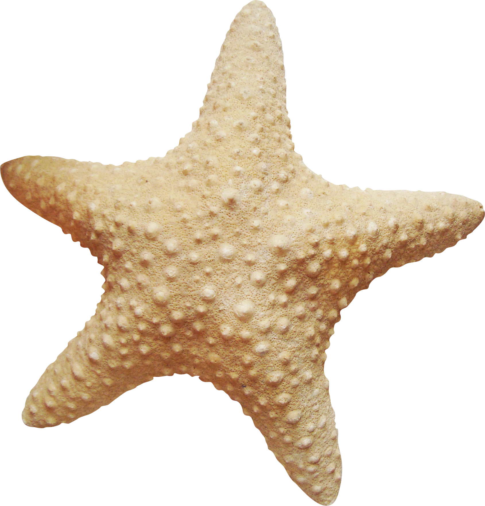
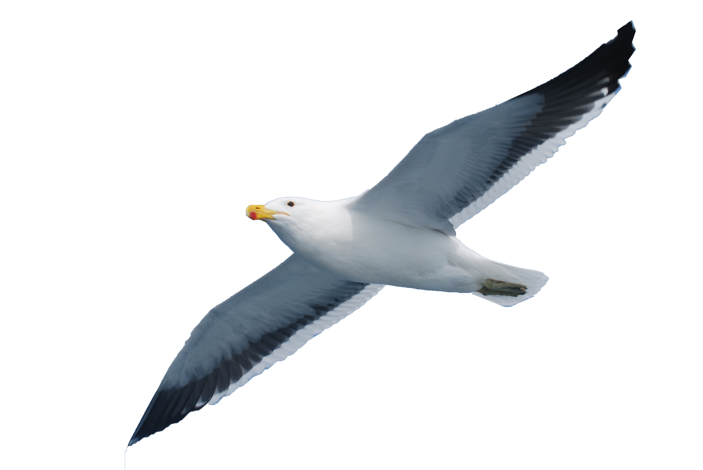

invertebrado
são aqueles que não possuem crânio nem coluna vertebral. Representando cerca de 95% de todas as espécies animais.

Aves
Aves marinhas são espécies adaptadas para viver e se alimentar no oceano, divididas principalmente em albatrozes, petréis, pinguins, pelicanos, atobás e gaivotas